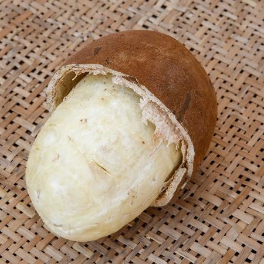

O cupuaçu é um fruto típico da Amazônia brasileira. Ele possui vitamina A, B1, B2 e C, sais minerais e pectina. O cupuaçu é fruto do cupuaçuzeiro (Theobroma grandiflorum), uma árvore típica da Amazônia brasileira, de família próxima à do cacaueiro.
| Cupuaçu | Igredientes do Cupuaçu | Preço ⠀⠀ |
|---|
| 200 ml | Cupuaçu + leite condensado | 20 reais |
|---|
| 500 ml | Cupuaçu + leite condensado | 30 reais |
|---|